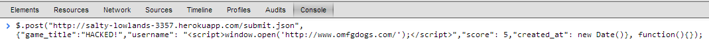

Josh Fishbein
Comp20 - Ming Chow - Assignement 6
Introduction
This application is designed to host scores for various online games. The main page displays all score entries,
the usersearch page allows a user to query high scores for a given user, and the highscores page displays the top ten
scores for a given game.
My job is to analyze this application for any security vulnerabilities. Once these vulnerabilities have been detected,
I will propose solutions to patch up the vulnerabilities.
Methodology
I went about testing this application by first briefly looking through the source code. Afterwards, I look for all of
the most common and obvious vulnerabilites such as cross site scripting and SQL injection. I then proceeded, to read
up on other forms of web site vulnerabilites by searching on Google and reading OWASP. I also tried to use Burp Suite,
however, I could not get it to work with my web browser.
Abstract of Findings
Through testing, I came across four different potential security threats.
- The first threat I detected was that the highscores database does not check the types of its inputs. In other words,
if the database expects text but is given a number instead, it will still run without providing any alerts. This can be
fixed by making sure that the database only receives the type of data it expects.
- The second threat I detected was that the database will accept HTML and Javascript code as its input. This is a serious
threat as searching for data can result in the execution of intrusive code. This can be resolved by checking for HTML and
Javascript code when the database accepts new data.
- The third threat I detected was that the input box on the user search page will also allow for HTML and Javascript code
This threat, known as cross-site scripting, can be used to force the website to execute malicious code. This can be prevented
checking input from the input box.
- The fourth threat I detected was similar to threats two and three. Since the application does not check for HTML or
Javascript code, code forcing website redirects can be added. This can be resolved using the same methods described earlier
Issues Found
Security Flaw #1: Add Invalid Data to Database
- Location - root page (http://salty-lowlands-3357.herokuapp.com/)
- Threat level - Low: This threat could perhaps result in some actions producing incorrect or unexpected outputs in some
cases, however, it will not occur in every case and will not release sensitive data or potentially harm the user
- Description - Since the application does not sanitize input data, invalid data can be added to the database. For example,
integers such as 5 can be added instead of strings as the game_title and username data elements. This threat was
found by testing potential weaknesses in the input methods of the database.
- Resolution - This issue was resolved by sanitizing input before entering it into the database. This involved checking
the type of each input and only proceeding if all input was of the right type. Below is the code resolving this issue.
Security Flaw #2: Inject Javascript and HTML Code into Database
- Location - root page (http://salty-lowlands-3357.herokuapp.com/)
- Threat Level - High: This threat will result in inserted HTML or Javascript code being executed everytime appropriate
queries are made. Since the root page returns a query for all entries, this will cause the code to execute everytime the root
page is opened. This code could be malicious and harmful to the user.
- Description - Since the application does not sanitize input before it enters it to the database, malicious code can be injected into the
database forcing it to execute everytime the data is retrieved. This threat was found by more extensively testing potential
weaknesses in the input methods of the database. The following injected code causes
the alert "Whaddup?" to be displayed everytime the root page is opened. This is very obnoxious and annoying to the user. Much
more dangerous actions, however, can be performed with more elaborate Javascript code.
- Resolution - This issue was resolved by sanitizing the data before it was entered into the database. The data was sanitized by
replacing characters indicative of HTML and Javascript code with their escape sequences. This allows the text entered to be displayed
in its original formate in the database while preventing it from being executed as Javascript or HTML code. If the following function
is called everytime data is read in, then all text can be sanitized before it is added to the database.
Security Flaw #3: Cross Site Scripting
- Location - usersearch page (http://salty-lowlands-3357.herokuapp.com/usersearch)
- Threat Level - Medium: By entering HTML or Javascript code into the input box, the attacker can force the website to execute
the inserted code. While this is dangerous because it is forces the website to execute malicious code, it is not as dangerous as
inserting the code into the database since the code will only be executed once and will not execute everytime an appropriate query
is made. The code also only runs locally on the attackers machine, unlike the code inserted into the database which runs on the
computers of all users of the database.
- Description - This attack is performed by entering code into the input box of the usersearch page. Again, since the web application does not sanitize
its data, Javascript and HTML code can be injected and forced to execute when entered into the usersearch box. Using the code shown below,
I can force the website to display the aler "Hacked!".
- Resolution - This attack can be resolved by calling the sanitize function listed earlier on the input text before trying to perform any actions
with it.
Security Flaw #4: No Database Input Size Limitation
- Location - root page (http://salty-lowlands-3357.herokuapp.com/)
- Threat Level - Medium: Since no limit is placed on the size of the data entered into the database, enormous strings can be added which
will waste the database's available memory and cause the application to be significantly slower.
- Description - I repeatedly added a string of about 1.5MB repeatedly to the database. Had I continued, I would have been able to use
up all of the database's available 256MB. This would prevent all future users from using the application until more database storage space
is purchased. This can be very costly to the owner of the database. Furthermore, adding large quantities of data significantly slows the database.
I was unable to use all of the database's available memory because the application started to run too slowly for me to continue. Since the root page
returns all documents, it needed to retrieve megabytes of data
on every query. This became so slow that I was forced to give up on my goal of using all of the database's memory.
- Resolution - This issue can be resolved by placing a limit on the size of the database elements. The following code will alert the user if
the provided database elements are too large. If the input data is too large, it will alert the user and will not add the document to the database.
Otherwise, it will add the document to the database.
Security Flaw #5: Website Redirect
Location - root page (http://salty-lowlands-3357.herokuapp.com/)
Threat Level - High: Using methods described earlier, an attacker can cause the website to redirect everytime the appropriate query is made.
In the case of the root page, since it retrieves all data everytime, the root page can be forced to always redirect causing the web application
to be nearly useless.
This attack can be performed by adding Javascript and HTML code to the databse that causes the window to change its location to another web address.
For my attack, I had the application open another window with the website www.OMFGdogs.com every time the root page is loaded. I elected to open a new
window instead of redirecting the web application's root page so that I could continue doing further testing.

Resolution - This attack can be resolved by calling the sanitize function shown earlier on the input data elements so that Javascript and HTML code can't be
executed by the database.
Conclusion
I would recommend implementing the functions and code I have provided so as to resolve the current issues. I think it would also be worth investing in
the BurpSuite full package so that more exhaustive testing of the database can be performed. Additionally, it would be worth paying for more database storage
so that the database is less likely to run out of memory.